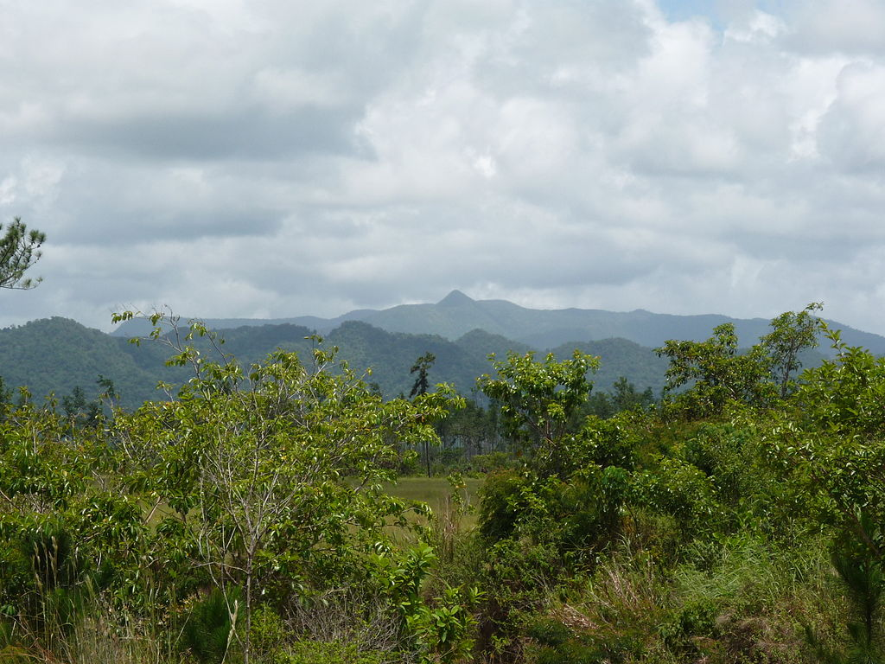

Owned by Jack Lonergan and Associates
Brief History of Belize
Belize is a country located on the eastern coast of Central America. Belize is bordered on the northwest by Mexico, on the east by the Caribbean Sea, and on the south and west by Guatemala. Its mainland is about 180 mi (290 km) long and 68 mi (110 km) wide. It has the lowest population and population density in Central America. The Mayan civilization spread into the area of Belize between 1500 B.C. and 300 A.D. and flourished until about 1200. European exploration campaigns began in 1502 when Christopher Columbus sailed along the Gulf of Honduras. Belize has a very diverse society that is composed of many cultures and languages that reflect its rich history. English is the official language of Belize, while Belizean Creole is an unofficial native language. Over half the population is multilingual, with Spanish being the second most common spoken language. It is known for its September Celebrations, its extensive barrier reef coral reefs and punta music.
Geography
Belize is on the Caribbean coast of northern Central America. It shares a border on the north with the Mexican state of Quintana Roo, on the west with the Guatemalan department of Petén, and on the south with the Guatemalan department of Izabal. To the east in the Caribbean Sea, the second-longest barrier reef in the world flanks much of the 240 miles (386 km) of predominantly marshy coastline.The area of the country totals 8,865 square miles (22,960 km2), an area slightly larger than El Salvador, Israel, New Jersey or Wales. The many lagoons along the coasts and in the northern interior reduces the actual land area to 8,263 square miles (21,400 km2). Belize is shaped like a rectangle that extends about 174 miles (280 km) north-south and about 62 miles (100 km) east-west, with a total land boundary length of 321 miles (516 km).  The undulating courses of two rivers, the Hondo and the Sarstoon River, define much of the course of the country's northern and southern boundaries. The western border follows no natural features and runs north-south through lowland forest and highland plateau. The north of Belize consists mostly of flat, swampy coastal plains, in places heavily forested. The flora is highly diverse considering the small geographical area. The south contains the low mountain range of the Maya Mountains.The highest point in Belize is Doyle's Delight at 3,688 ft (1,124 m). Belize's rugged geography has also made the country's coastline and jungle attractive to drug smugglers, who use the country as a gateway into Mexico. In 2011, the United States added Belize to the list of nations considered major drug producers or transit countries for narcotics.
Mayan Civilizaton
The Maya civilization spread across what is now Belize around 1500 BC, and flourished there until about AD 900. The recorded history of the middle and southern regions is dominated by Caracol, an urban political centre that may have supported over 140,000 people. North of the Maya Mountains, the most important political centre was Lamanai. In the late Classic Era of Maya civilisation (600–1000 AD), as many as one million people may have lived in the area that is now Belize. When Spanish explorers arrived in the 16th century, the area that is now Belize included three distinct Maya territories: Chetumal province, which encompassed the area around Corozal Bay; Dzuluinicob province, which encompassed the area between the New River and the Sibun River, west to Tipu; and a southern territory controlled by the Manche Ch'ol Maya, encompassing the area between the Monkey River and the Sarstoon River.Spanish conquistadors explored the land and declared it a Spanish colony but chose not to settle and develop because of its lack of resources and the hostile Indian tribes of the Yucatán. English and Scottish settlers and pirates known as the Baymen entered the area from the 17th century, with Baymen first settling on the coast of what is now Belize in 1638, seeking a sheltered region from which they could attack Spanish ships (see English settlement in Belize). The settlers established a trade colony and port in what became the Belize District, and during the 18th century, established a system using black slaves to cut logwood (Haematoxylum campechianum) trees. This yielded a valuable fixing agent for clothing dyes, and was one of the first ways to achieve a fast black before the advent of artificial dyes. The Spanish granted the British settlers the right to occupy the area and cut logwood in exchange for their help suppressing piracy.
English and Scottish settlers and pirates known as the Baymen entered the area from the 17th century, with Baymen first settling on the coast of what is now Belize in 1638, seeking a sheltered region from which they could attack Spanish ships (see English settlement in Belize). The settlers established a trade colony and port in what became the Belize District, and during the 18th century, established a system using black slaves to cut logwood (Haematoxylum campechianum) trees. This yielded a valuable fixing agent for clothing dyes, and was one of the first ways to achieve a fast black before the advent of artificial dyes. The Spanish granted the British settlers the right to occupy the area and cut logwood in exchange for their help suppressing piracy.
Climate
Belize has a tropical climate with pronounced wet and dry seasons, although there are significant variations in weather patterns by region. Temperatures vary according to elevation, proximity to the coast, and the moderating effects of the northeast trade winds off the Caribbean. Average temperatures in the coastal regions range from 24 °C (75.2 °F) in January to 27 °C (80.6 °F) in July. Temperatures are slightly higher inland, except for the southern highland plateaus, such as the Mountain Pine Ridge, where it is noticeably cooler year round. Overall, the seasons are marked more by differences in humidity and rainfall than in temperature. Average rainfall varies considerably, from 53 inches (1,350 mm) in the north and west to over 180 inches (4,500 mm) in the extreme south. Seasonal differences in rainfall are greatest in the northern and central regions of the country where, between January and April or May, less than 3.9 inches (100 mm) of rainfall per month. The dry season is shorter in the south, normally only lasting from February to April. A shorter, less rainy period, known locally as the "little dry", usually occurs in late July or August, after the onset of the rainy season.
Flora and Fauna
While over 60% of Belize's land surface is covered by forest, some 20% of the country's land is covered by cultivated land (agriculture) and human settlements. Savanna, scrubland and wetland constitute the remainder of Belize's land cover. Important mangrove ecosystems are also represented across Belize's landscape. As a part of the globally significant Mesoamerican Biological Corridor that stretches from southern Mexico to Panama, Belize's biodiversity – both marine and terrestrial – is rich, with abundant flora and fauna. Belize is also a leader in protecting biodiversity and natural resources. According to the World Database on Protected Areas, 37% of Belize's land territory falls under some form of official protection, giving Belize one of the most extensive systems of terrestrial protected areas in the Americas. By contrast, Costa Rica only has 27% of its land territory protected.
Barrier Reef
The Belize Barrier Reef is a series of coral reefs straddling the coast of Belize, roughly 980 feet (300 m) offshore in the north and 25 miles (40 km) in the south within the country limits. The Belize Barrier Reef is a 190 miles (300 km) long section of the 560 miles (900 km) long Mesoamerican Barrier Reef System, which is continuous from Cancún on the northeast tip of the Yucatán Peninsula through the Riviera Maya up to Honduras making it one of the largest coral reef systems in the world. It is Belize's top tourist destination, popular for scuba diving and snorkelling, and attracting almost half of its 260,000 visitors. It is also vital to its fishing industry. In 1842 Charles Darwin described it as "the most remarkable reef in the West Indies".
Food
Belizean cuisine is an amalgamation of all ethnicity in the nation, and their respectively wide variety of foods. It might best be described as both similar to Mexican/Central American cuisine and Jamaican/Anglo-Caribbean cuisine.Breakfast typically consists of bread, flour tortillas, or fry jacks that are often homemade. Fry jacks are eaten with various cheeses, refried beans, various forms of eggs or cereal, along with powdered milk, coffee, or tea. Midday meals vary, from foods such as rice and beans with or without coconut milk, tamales (fried maize shells with beans or fish), "panades", meat pies, escabeche (onion soup), chimole (soup), caldo, stewed chicken and garnaches (fried tortillas with beans, cheese, and sauce) to various constituted dinners featuring some type of rice and beans, meat and salad or coleslaw.In rural areas, meals are typically more simple than in cities. The Maya use maize, beans, or squash for most meals, and the Garifuna are fond of seafood, cassava (particularly made into cassava bread or Ereba) and vegetables. The nation abounds with restaurants and fast food establishments selling fairly cheaply. Local fruits are quite common, but raw vegetables from the markets less so. Mealtime is a communion for families and schools and some businesses close at midday for lunch, reopening later in the afternoon. Steak is also common.